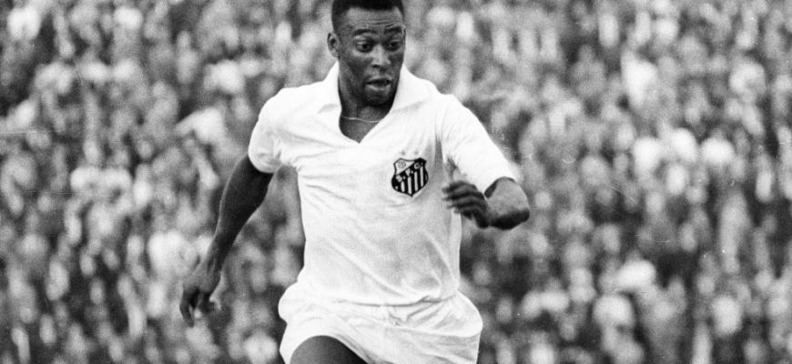
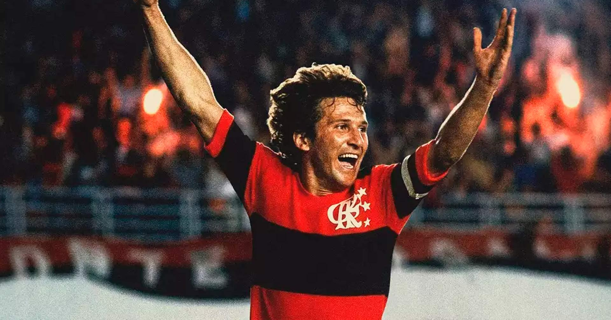
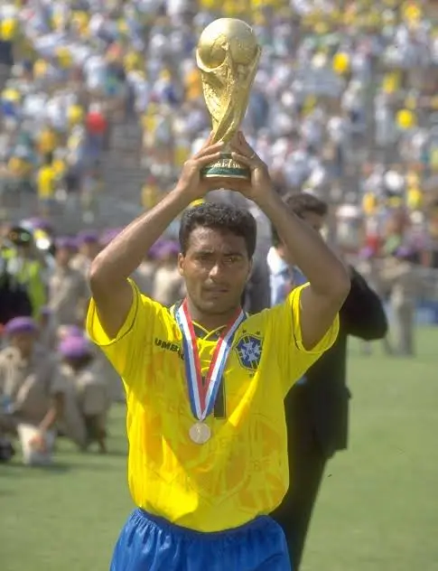
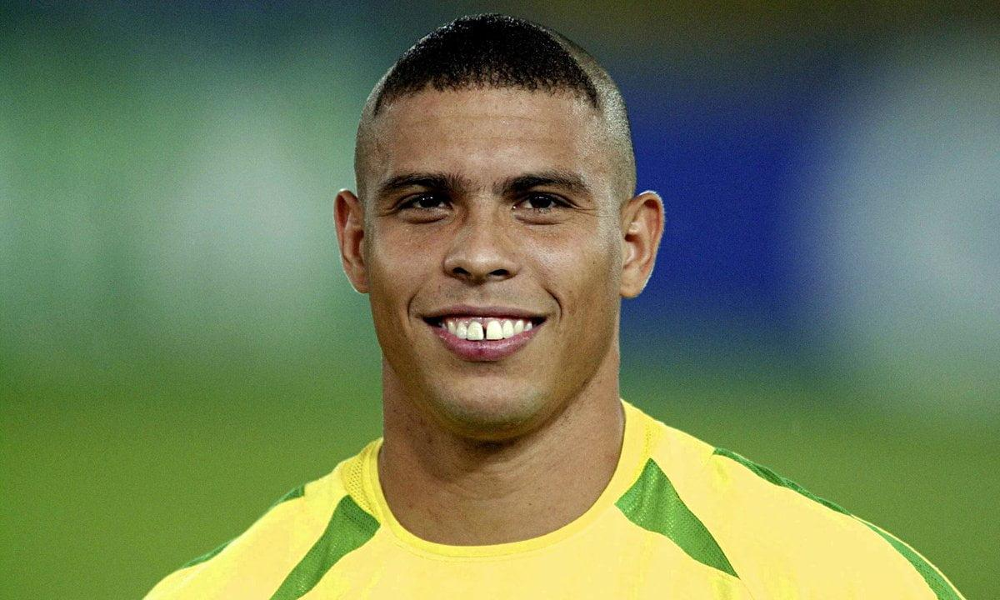
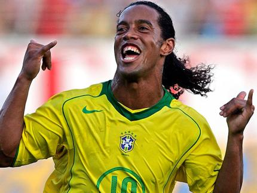
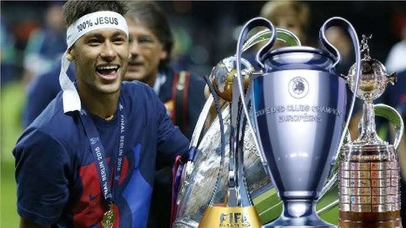
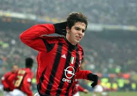

Sobre a Seleção
A Seleção Brasileira é uma das equipes mais tradicionais do futebol mundial, conhecida por sua história, seus craques e suas conquistas.
Títulos Mundiais
Caminho da Seleção Brasileira até o pentacampeonato.
1958
Suécia
Primeiro título mundial.1962
Chile
Brasil conquista o bicampeonato.1970
México
A lendária seleção de Pelé.1994
Estados Unidos
Título decidido nos pênaltis.2002
Coreia/Japão
Brasil chega ao pentacampeonato.Jogadores Históricos

Pelé
Considerado o maior jogador da história do futebol. Conquistou três Copas do Mundo pela Seleção Brasileira. Pelé começou a ser reconhecido nacionalmente ainda com 16 anos de idade. Em 1957, o garoto já era titular do Santos e foi artilheiro do Campeonato Paulista, o mais jovem até hoje, marcando 36 gols. O Rei do Futebol atuou durante quase toda sua carreira no Santos, entre 1956 a 1974.
Títulos conquistados:
- 🏆 Copa do Mundo – 1958
- 🏆 Copa do Mundo – 1962
- 🏆 Copa do Mundo – 1970
- 🏆 Copa Libertadores – 1962 e 1963
- 🏆 Mundial Interclubes – 1962 e 1963

Zico
Ídolo do Flamengo e um dos maiores camisas 10 da história do futebol brasileiro. Faz parte do rol dos melhores jogadores de futebol do Brasil e do mundo. Jogou em três Copas do Mundo pela Seleção Brasileira: na Argentina em 1978, na Espanha em 1982 e no México em 1986. Jogou pelo Flamengo a maior parte de sua carreira.
Títulos conquistados:
- 🏆 Copa Libertadores – 1981
- 🏆 Mundial Interclubes – 1981
- 🏆 Campeonato Brasileiro – 1980, 1982 e 1983
- 🏆 Campeonato Carioca – 1972, 1974, 1978, 1979, 1981 e 1986

Romario
Romário de Souza Faria nasceu no Rio, em 29 de janeiro de 1966. Atualmente ocupa o cargo de senador da república pelo estado do Rio de Janeiro e está filiado ao PL. Antes de entrar para carreira política, foi um dos maiores artilheiros da história do futebol. Com apelido de Baixinho, fez parte da seleção. Pela seleção brasileira Romário participou de apenas duas Copas do Mundo(1990 e 1994), mas deixou sua marca ao ser o principal jogador da cconquista do Tetra em 1994, ano em que foi eleito o melhor jogador do mundo pela FIFA.
Títulos conquistados:
- 🏆 Copa do Mundo Fifa – 1994
- 🏆 Copa das Confederações FIFA – 1997
- 🏆 Copa América – 1989,1997
- 🏆 Medalha de Prata Olimpica – 1988
- 🏆 Campeonato Brasileiro: – 2000
- 🏆 Campeonato Holandês – 1988-89,1990-91,1991-92
- 🏆 La liga – 1993-94
- 🏆 Melhor Jogador do Mundo FIFA – 1994

Rivaldo
Rivaldo foi um dos três jogadores com mais de 23 anos a defender o Brasil nos Jogos Olímpicos Atlanta 1996. Eleito pela FIFA como o melhor jogador do mundo em 1999, Rivaldo é um expoente da essência do futebol brasileiro. Com sua habilidade e técnica singulares, brilhou no Brasil e na Europa e foi decisivo no último título mundial da Seleção.
Títulos conquistados:
- 🏆 Campeonato Brasileiro – 1994
- 🏆 Supercopa da UEFA – 1997 e 2003
- 🏆 Copa do Rei – 1997–98
- 🏆 La Liga – 1997–98 e 1998–99
- 🏆 Liga dos Campeões da UEFA – 2002–03
- 🥉 Medalha de Bronze Olímpica – 1996
- 🏆 Copa das Confederações FIFA – 1997
- 🏆 Copa América – 1999
- 🏆 Copa do Mundo FIFA – 2002
- 🏆 Melhor Jogador do Mundo FIFA – 1999

Ronaldo
Ronaldo Luís Nazário de Lima (nascido em 18 de setembro de 1976, em Itaguaí, Rio de Janeiro) é um ex-jogador e empresário brasileiro amplamente considerado um dos maiores centroavantes da história do futebol. Conhecido como “O Fenômeno”, marcou época nos anos 1990 e 2000 pela combinação de velocidade, técnica e finalização letal.
Títulos conquistados:
- 🏆 Copa do Mundo – 1994
- 🏆 Copa do Mundo – 2002
- 🏆 Copa América – 1997
- 🏆 Copa América – 1999
- 🏆 Copa das Confederações – 1997
- 🏆 Bola de Ouro – 1997 e 2002
- 🏆 Melhor Jogador do Mundo FIFA – 1996, 1997 e 2002

Ronaldinho Gaúcho
Ronaldo de Assis Moreira, conhecido mundialmente como Ronaldinho Gaúcho, é um ex-jogador de futebol brasileiro nascido em 21 de março de 1980 em Porto Alegre (RS).
Títulos conquistados:
- 🏆 Copa do Mundo – 2002
- 🏆 Copa América – 1999
- 🏆 Copa das Confederações – 2005
- 🏆 Liga dos Campeões – 2006
- 🏆 Copa Libertadores – 2013
- 🏆 Copa do Rei – 2006,2007
- 🏆 La Liga – 2005,2006
- 🏆 Melhor Jogador do Mundo FIFA – 2004,2005

NeymarJR
Surgiu como um fenômeno aos 17 anos. Conquistou o Campeonato Paulista, a Copa do Brasil e a Libertadores da América. Formou o lendário trio "MSN" com Messi e Suárez, vencendo a Liga dos Campeões da UEFA, o Mundial de Clubes e o Campeonato Espanhol. Foi contratado pelo valor recorde de 222 milhões de euros. Conquistou diversos títulos nacionais e foi fundamental para levar o time à sua primeira final de Champions League. Conquistou a Copa das Confederações e o inédito ouro olímpico.
Títulos conquistados:
- 🏆 Copa das Confederações da FIFA – 2013
- 🥉 Medalha de Ouro Olímpica – 2016
- 🏆 Copa Libertadores da América – 2011
- 🏆 Copa do Brasil – 2010
- 🏆 Liga dos Campeões – 2014-15
- 🏆 Mundial de Clubes da Fifa – 2015
- 🏆 Copa do Rei – 2014-15,2015-16,2016-17
- 🏆 La Liga – 2014-15,2015-16

Kaka
Kaká estreou em um jogo profissional em fevereiro de 2001 contra o time carioca Botafogo. No ano a seguir, entrou para a Seleção Brasileira. Com o time do país, venceu a Copa do Mundo 2002, e as Copas das Confederações de 2005 e 2009. O jogador também atuou nas Copas de 2006 e 2010. Kaká, inclusive, foi o último brasileiro a ser ídolo dos rossoneri e o principal jogador de uma geração milanista absolutamente vitoriosa. Kaká teve um início de carreira marcado por uma ascensão meteórica.
Títulos conquistados:
- 🏆 Copa do Mundo – 2002
- 🏆 Copa das Confederações – 2005
- 🏆 Mundial de Clubes da Fifa – 2007
- 🏆 Supercopa da UEFA – 2007
- 🏆 Supercopa da Italia– 2004
- 🏆 Campeonato Italiano – 2003,2004
- 🏆 Melhor Jogador do Mundo FIFA – 2007